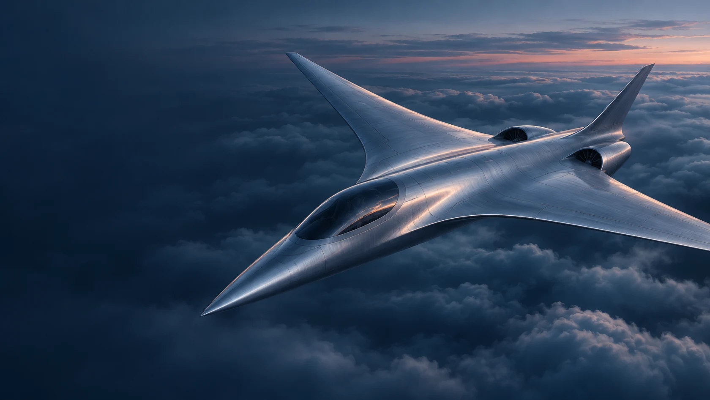
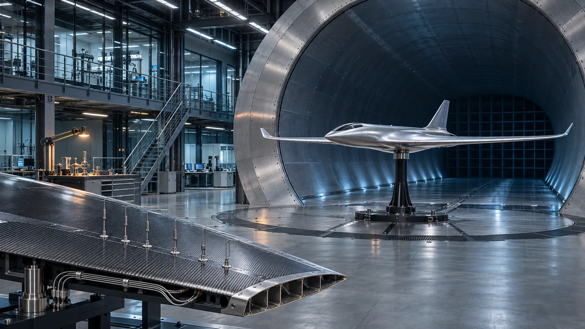
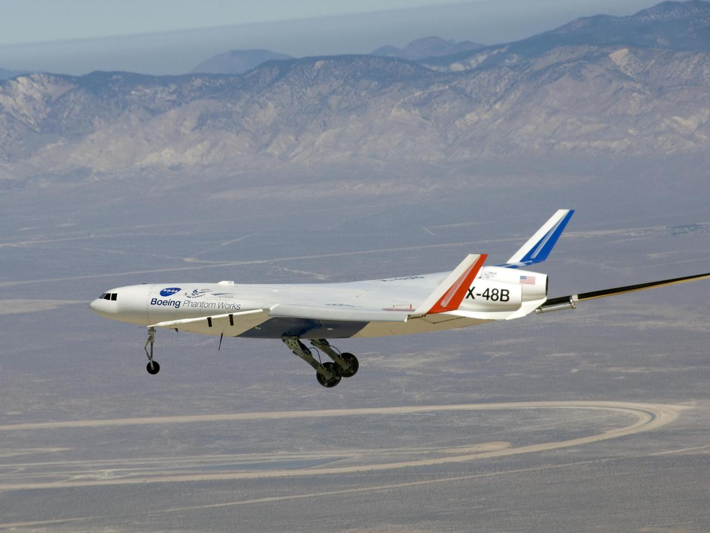

V–01 / ФОРМА / ЭФФЕКТИВНОСТЬ
Лётная лаборатория
Стриж
Стриж — концепт для исследования интегральной компоновки. Плавный переход корпуса в крыло меняет не только силуэт: вместе с ним приходится заново искать баланс объёма, устойчивости и управления.

ИНЖЕНЕРИЯ НОВОГО ГОРИЗОНТА
От первого вопроса —
до новой архитектуры полёта.
01 / НАШ ВЕКТОР
Почему один самолёт вытягивает крыло, другой объединяет его с корпусом, а третий строится вокруг груза? Ответ начинается с задачи.
VECTOR помогает пройти этот путь: увидеть форму, разобрать устройство и понять, что предстоит проверить. Начните с одной из трёх программ — каждая открывает свой инженерный вопрос.
Знакомство с бюро02 / ПРОГРАММЫ
Лётная лаборатория
Стриж — концепт для исследования интегральной компоновки. Плавный переход корпуса в крыло меняет не только силуэт: вместе с ним приходится заново искать баланс объёма, устойчивости и управления.
Транспортная платформа
Атлас — концепт транспортного аппарата со сменным грузовым модулем. Его главный вопрос начинается на земле: как подготовить, установить и проверить новую загрузку без лишней разборки?
Атмосферные исследования
Горизонт — концепт носителя атмосферных приборов. Длинное крыло и компактный отсек подчинены одной задаче: оставить больше времени и энергии на полезные измерения.

03 / ОТКРЫТАЯ ЛАБОРАТОРИЯ
Поверните аппарат. Раскройте конструкцию.
Посмотрите, как форма встречается с потоком.
04 / ИНЖЕНЕРНЫЙ ВЗГЛЯД
Поток создаёт нагрузку.
Конструкция и системы отвечают на неё.
05 / ЖУРНАЛ
ИЗУЧАТЬ / РЕАЛЬНАЯ АВИАЦИЯ
Как выглядит проверка идеи в настоящем небе? X-59, X-48B и ER-2 — три разных ответа на три разных исследовательских вопроса.
Открыть лётный архив ↗
СЛЕДУЮЩИЙ ШАГ